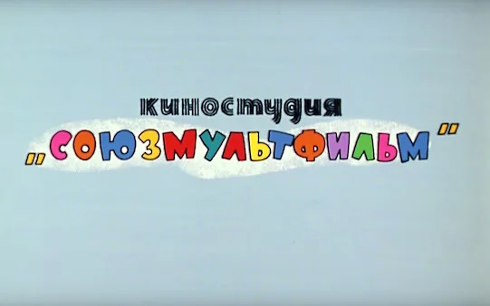
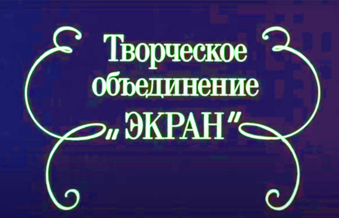
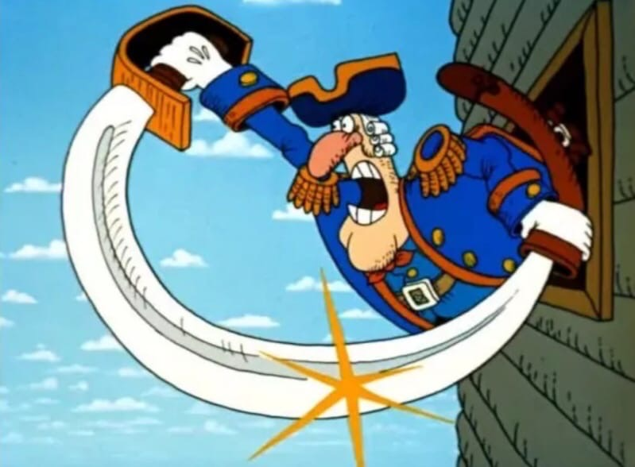

Мультипликация в СССР и России
Крупнейшим производителем мультфильмов для показа в кинотеатрах в советский период являлась киностудия «Союзмультфильм»;
некоторое количество мультфильмов производилось в республиканских киностудиях, таких как Свердловская,
Киевская студия научно-популярных фильмов, «Беларусьфильм», «Арменфильм», «Узбекфильм» и т. д. Преобладали короткометражные мультфильмы,
было снято несколько серий короткометражных мультфильмов (наиболее известные «Ну, погоди», «Винни-Пух», «Возвращение блудного попугая», «Котёнок по имени Гав», серия мультфильмов о Простоквашино),
а также мультипликационный художественный киножурнал «Весёлая карусель».


Широкое распространение имела кукольная анимация. Некоторое часть мультфильмов производилась в технике перекладки и технике живописи по стеклу.
После распада СССР некоторое время «Союзмультфильм» продолжал оставаться крупнейшим в России производителем мультфильмов, но позднее утратил лидирующие
позиции в пользу ряда частных мультипликационных студий, сохранив лишь некоторые позиции в производстве короткометражных мультфильмов.
Крупнейшим производителем мультфильмов для телевидения являлось Творческое объединение «Экран»; некоторое количество таких мультфильмов производилось местными телестудиями
(куйбышевской, саратовской, волгоградской, свердловской и пермской) и республиканскими и местными киностудиями (Свердловской, Киевской студией научно-популярных фильмов, «Беларусьфильм»,
«Арменфильм», «Узбекфильм») по заказу Государственного комитета СССР по телевидению и радиовещанию.
Как и среди мультфильмов, предназначенных для кинотеатров, преобладали короткометражные мультфильмы и серии короткометражных мультфильмов
(наиболее известные: «Кот Леопольд», «Домовёнок Кузя», «Приключения поросёнка Фунтика», «Приключения Мюнхаузена»), однако было произведено и некоторое
количество малосерийных мультсериалов («Приключения Незнайки и его друзей», «Незнайка в Солнечном городе», «Волшебник Изумрудного города», «Дядя Фёдор, пёс и кот»,
«Приключения капитана Врунгеля», «Доктор Айболит», «КОАПП»).


Также был проиведено несколько полнометражных мультфильмов («Остров сокровищ» и «Энеида»).
Вместе с рисованной мультипликацией развивались те же техники, что и у прочей отечественной мультипликации — кукольная, пластилиновая, перекладка, живопись по стеклу.
После распада СССР некоторое время Творческое объединение «Экран» продолжало оставаться основным производителем мультфильмов для телевидения, но в 1995 году оно прекратило своё существование,
а в несколько более поздний период основными производителями российских мультсериалов стали частные мультипликационные студии.